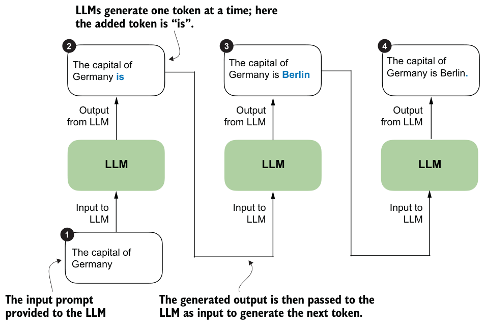
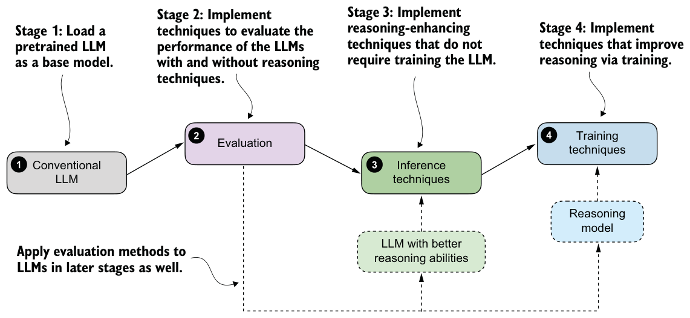
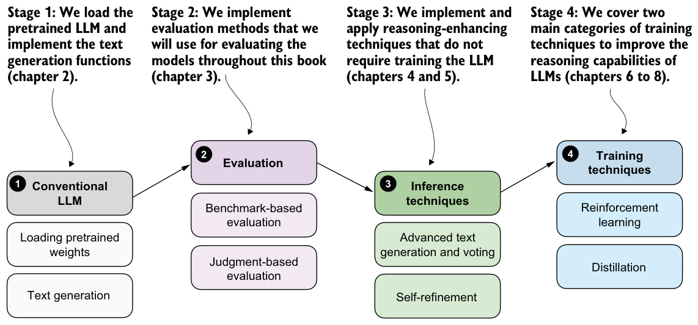

1.6Why build reasoning models from scratch?
Following the release of DeepSeek-R1 in January 2025, improving the reasoning abilities of LLMs has become one of the hottest topics in AI, and for good reason. Stronger reasoning skills allow LLMs to tackle more complex problems, making them more capable across various tasks that users care about.
This shift is also reflected in a February 12, 2025, statement from OpenAI’s CEO:
We will next ship GPT-4.5, the model we called Orion internally, as our last non-chain-of-thought model. After that, a top goal for us is to unify o-series models and
GPT-series models by creating systems that can use all our tools, know when to think for a long time or not, and generally be useful for a very wide range of tasks.
The preceding quote underlines the major shift among leading LLM providers toward reasoning models. Here, “chain-of-thought” refers to a prompting technique that guides language models to reason step by step to improve their reasoning capabilities; we’ll cover it in more detail in chapters 4 and 5.
Also noteworthy is the mention of knowing “when to think for a long time or not.” This hints at an important design consideration: reasoning is not always necessary or desirable. For instance, reasoning models are designed for complex tasks such as solving puzzles, advanced math problems, and challenging coding tasks. They are also often useful in agent systems, especially for task decomposition, planning, and choosing which tools to use. They are not necessary for simpler tasks like summarization, translation, or knowledge-based question answering. In fact, using reasoning models for everything can be inefficient and expensive. For instance, they are typically more expensive to use, more verbose, and sometimes more prone to errors due to “overthinking.” Here, the simple rule applies: use the right tool (or type of LLM) for the task.
Reasoning models are often more expensive than non-reasoning models for two reasons. First, they tend to produce longer outputs because they include intermediate steps that explain how an answer is derived. As figure 1.8 illustrates, LLMs generate text one token at a time, and each token requires a full forward pass. If a reasoning model’s answer is twice as long, generation involves roughly twice as many forward passes, which increases compute costs.

Second, many reasoning workflows require running the model several times for a single task, such as to sample multiple candidate solutions, call tools, or run a verifier. These additional calls multiply the total number of tokens processed and further increase cost beyond the single-call behavior shown in figure 1.8.
That’s exactly why it helps to implement these models and methods from scratch. It’s one of the best ways to understand how they work. And if we understand how LLMs and reasoning models work, we can better understand these tradeoffs.
1.7A road map to building reasoning models from scratch
Now that we’ve discussed reasoning in LLMs from a bird’s-eye view, the subsequent chapters will guide you through coding and applying reasoning methods from scratch. At a high level, the road map is simple. We’ll start with a conventional LLM, learn how to evaluate its reasoning behavior, and then explore two broad ways to improve it: inference techniques and training techniques. Figure 1.9 illustrates the main steps.

Stage 1 is an explicit step in figure 1.9 because, in practice, reasoning methods are usually applied to an existing base LLM rather than one trained from scratch. We’ll begin with a conventional LLM that has already been pretrained, and we’ll treat it as the baseline we want to improve.
Stage 2 implements the evaluation tools needed to tell whether a method actually helps. That’s why stages 3 and 4 loop back to evaluation: after improving reasoning behavior through inference-time methods or additional training, we return to stage 2 to measure whether the change helped.
Stage 3 improves reasoning behavior at inference time without changing the model weights, while stage 4 improves the model itself through additional training, turning the pretrained LLM into a dedicated reasoning model.
Figure 1.10 provides more detail and summarizes the different substeps covered in each chapter.

I’m looking forward to the journey ahead and hope you are as well.
Summary
- Conventional LLM training occurs in several stages:
- Pretraining, in which the model learns language patterns from vast amounts of text
- Instruction fine-tuning, which improves the model’s responses to user prompts
- Preference tuning, which aligns model outputs with human preferences
- Reasoning methods are applied on top of a conventional LLM.
- Reasoning in LLMs refers to improving a model so that it explicitly generates intermediate steps (chain of thought) before producing a final answer, which often increases accuracy on multistep tasks.
- Reasoning in LLMs is different from rule-based reasoning, and it likely also works differently from human reasoning. Currently, the consensus is that reasoning in LLMs relies on statistical pattern matching.
- Pattern matching in LLMs relies purely on statistical associations learned from data, enabling fluent text generation but lacking explicit logical inference.
- Improving reasoning in LLMs can be achieved in a few ways:
- Inference-time compute scaling improves reasoning without retraining (e.g., chain-of-thought prompting).
- Reinforcement learning involves training models explicitly with reward signals.
- Supervised fine-tuning and distillation, using examples from stronger reasoning models.
- Building reasoning models from scratch provides practical insights into LLM capabilities, limitations, and computational tradeoffs.